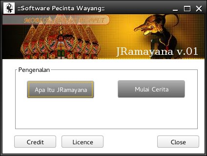
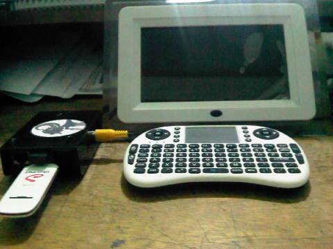
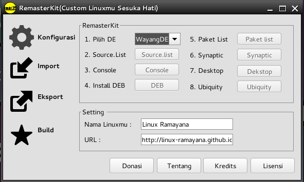
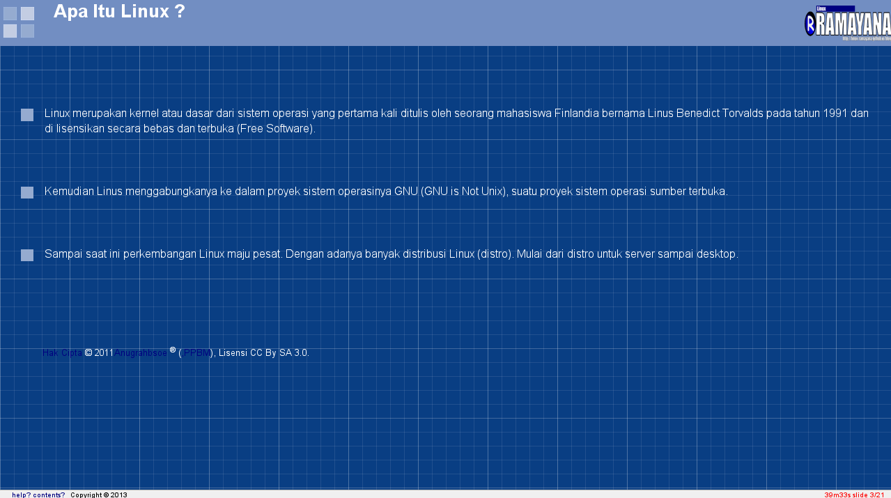
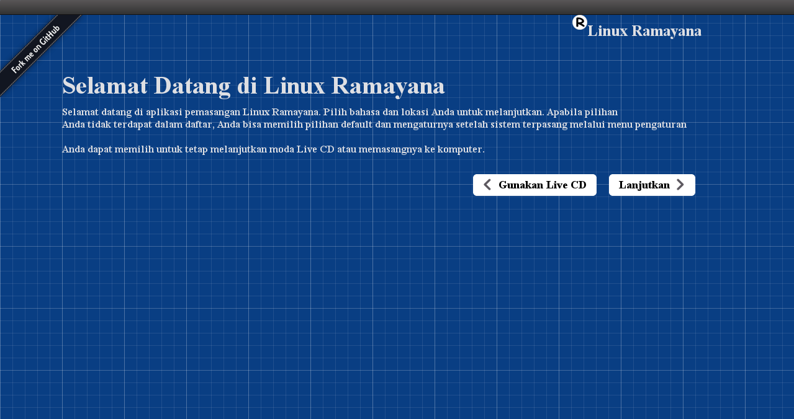
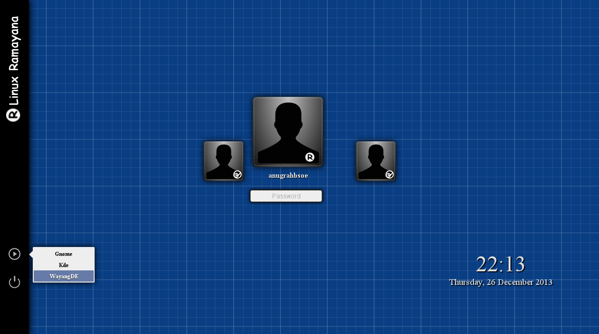
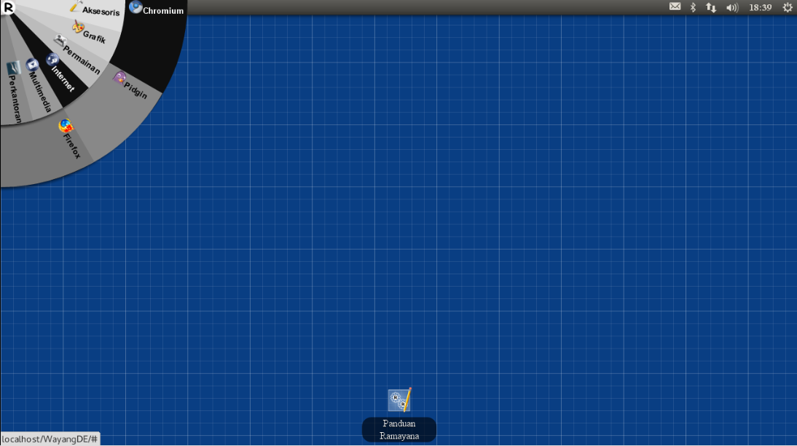

Welcome to Linux Ramayana
notice: Write your notice message here.
Linux Ramayana adalah distribusi Linux yang dikembangkan oleh Anugrah Bagus Susilo. Distribusi ini awalnya dirancang sesuai dengan kebutuhan si pengguna ,namun karena banyak respon positif dari teman-teman di komunitas linux di Kampus,kedepannya akan mulai dikembangkan dengan lebih baik lagi.
Linux Ramayana dikembangkan secara terbuka dan bersama-sama untuk menghasilkan distro Linux khas, awalnya untuk kebutuhan pengguna,kebutuhan pendidikan dan mungkin kedepannya akan ada penyesuain agar distro ini tidak punah.
Yang pasti Linux Ramayana dikembangkan agar para insan melek dunia Open Source dan menjadi alternatif distro di Kampus ,selain itu menghindari dan meminimalisir adanya pembajakan.
Feature
https://github.com/LinuxRamayana/JRamayana

JRamayana is Software Introduction Traditinal Puppets of Indonesia, based Java
https://github.com/LinuxRamayana/RAMBerry

RAMBerry is Linux Ramayana ARM Hard Float Version for Raspberry Pi
https://github.com/anugrahbsoe/RemasterKit

RemasterKit = Custom Your Linux Anyway
Download
- Arjuna Muda (1.0) =
- Brahmana Putra (2.0) =
Bugs
https://github.com/LinuxRamayana/Bugs/issues/new
Tour
if you want to try linux Ramayana tour ,you can use :
Username : anugrahbsoe
Password : ramayana
Enjoy its,..!
*notes : browser recommended is chrome/chromium ,firefox is buggy
Donate
If you wish you can make a donation to No Account Below.
BANK BRI
A/N : ANUGRAH BAGUS SUSILO,
No. Rek : 5996-01-000438-50-8.
If you have sent donations, immediately send a confirmation email to
: bagussalemba@yahoo.com, newbieilmu@gmail.com or HP/SMS : 085-640-275-438.
Thanks to :
1. Mujito : Rp. 50.000,00
2. Labkom UBL Salemba : Internet and Computer
Developer
https://groups.google.com/forum/?fromgroups#!forum/dev-ramayana
Maintainer
github : anugrahbsoe
twitter : anugrahbsoe
launchpad : newbieilmu
Documentation
https://github.com/LinuxRamayana/Guide_Book--
Screenshot
GuideBook on Web

source :
Wayang Installer

source : https://github.com/LinuxRamayana/Ramayana-Installer
Wayang Themes Greeter

source : https://github.com/LinuxRamayana/Wayang-Themes-Greeter
Wayang Desktop Environment

source : https://github.com/LinuxRamayana/WayangDE